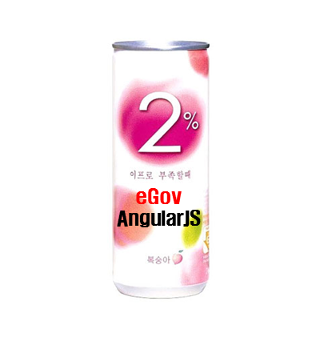
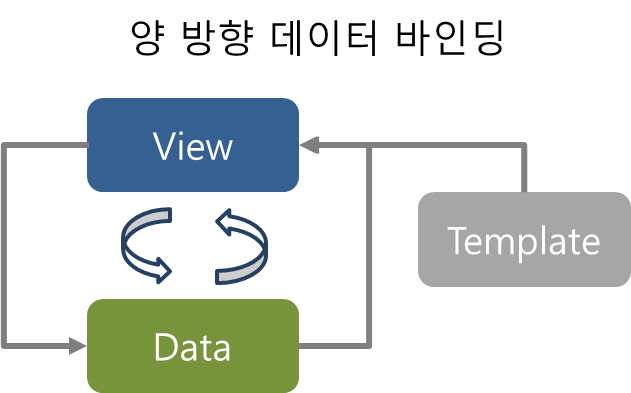

eGovAngularJS
UI 개발을 쉽게
표준프레임워크에 2% 부족함을 채우다.
http://14.63.199.244:8080/guruguru/
ActiveX 기술 없이 모든 브라우저 동작?!
UI 솔루션 살 돈도 없다?!
매번 다른 말을 하는 고객?!
표준웹 UI 개발은 어렵다.
-
요구사항의 변경이 심하다!
-
개발자 vs 기획자 vs 디자이너는 맨날 싸운다!
-
기능이 많아 질 수록 코드가 복잡하다!
eGovAngularJS


양방향 데이터 바인딩
jQuery 예제
위의 체크박스를 클릭하면 보시는 내용은 숨겨질 것입니다.
AngularJS 예제
위의 체크박스를 클릭하면 보시는 내용은 숨겨질 것입니다.

MVC 구조 제공

MVC 구조가 없는 코드
HTML
사번 이름 부서
MVC 구조가 없는 코드
JavaScript
// listData를 이용하여 dropBox(select)의 option을 구성한다.
function makeDropBox(dropbox, listData){
var option;
dropbox.options.length = 0; //초기화
if(listData){
for(var i = 0, length = listData.length; i < length; i++) {
option = document.createElement("option");
option.value = listData[i].cdDetailNo;
option.text = listData[i].cdDetailName;
dropbox.options.add(option);
}
}
};
var searchPanel = document.getElementById("search-panel");
var deptDropbox = searchPanel.getElementsByClassName("dept-dropbox")[0];
var posDropbox = searchPanel.getElementsByClassName("pos-dropbox")[0];
var sUserId = document.getElementById("sUserId");
var sUserNm = document.getElementById("sUserNm");
var sFind = document.getElementById("sFind");
$.ajax(urlDept)
.success(function(jsonData){
// 부서 정보 조회 후 처리
makeDropBox(deptDropbox, jsonData.DS_CODE);
});
// 직급 정보 조회
$.ajax(urlPos)
.success(function posCallBack(jsonData){
// 직급 정보 조회 후 처리
makeDropBox(posDropbox, jsonData.DS_CODE);
});
// 조회버튼에 이벤트 등록
//document.getElementById("sFind").onclick = function(){
sFind.onclick = function(){
// 조회 버특 클릭 시 인사 정보 조회
$.ajax(urlUserList)
// 인사 정보 조회 후 처리
.success(function(jsonData){
// masterView를 이용하여 grid 정보 갱신
CommMng.userMnge.GridView.setGridData(jsonData.USER_DS);
});
};
var gridColumn = ["userId", "userNm", "deptCd"];
var grid = document.getElementById("gridPanel").getElementsByTagName("table")[0];
var gridBody = grid.children[1];
function setGridData(listData){
var list = "";
gridData = listData;
if(listData){
for(var i = 0, length = listData.length; i < length; i++) {
list += "";
for(var j = 0, length2 = gridColumn.length; j < length2; j++) {
list += "";
list += listData[i][gridColumn[j]] || " ";
list += " ";
}
list += " ";
}
}
gridBody.innerHTML = list; // 값 변경
};
MVC 구조화된 코드
HTML (Template)
사번 이름 부서
{{userId}} {{userNm}} {{userNm}}
MVC 구조화된 코드
JavaScript (Controller)
function userMgtCtr ($scope,$http) {
$scope.deptList = [
{ deptId: '001', deptNm: '부서A'},
{ deptId: '002', deptNm: '부서B'}
];
$scope.posList = [
{ posId: '001', posNm: '사원'},
{ posId: '002', posNm: '대리'}
];
$scope.find = function (sObj) {
$http({
method: 'GET', url: 'getUserList',
params: { deptId: sObj.deptId, posId: sObj.posId }
})
.success(function(data, status, headers, config) {
response.data = $scope.userList;
});
};
}
다양한 UI 컴포넌트 제공

아주 쉬운 UI 컴포넌트 사용
- 그리드 컴포넌트 -
이름 이메일 등록일
{{name}} {{email}} {{regDate}}
function demoCtrl ($scope) {
$scope.userList = [
{ name: "재도", email: "haibane@gmail.com", regDate: "20130910"},
{ name: "재하", email: "jeaha@gmail.com", regDate: "20130910" },
{ name: "지수", email: "jisu@gmail.com", regDate: "20130910" },
{ name: "한행", email: "hanhang@gmail.com", regDate: "20130910" }
];
}
- 차트 컴포넌트 -
function demoCtrl ($scope) {
//차트 데이터 등록
$scope.myData = [
{"key": "data_1", "values": [[0,68],[1,91],[2,57],[3,87],[4,79],[5,21],[6,51],[7,10],[8,11],[9,33]]},
{"key": "data_2", "values": [[0,61],[1,99],[2,90],[3,92],[4,67],[5,68],[6,40],[7,54],[8,62],[9,83]]}
];
}
개발을 쉽게 도와주는
개발자 사이트 제공
DEMO
한 가지 더!
Cross Browsing Test
시나리오 1
describe('대시보드 화면', function () {
beforeEach(function () {
browser().navigateTo('/');
});
it('타이틀이 포함된다.', function () {
expect(element('.page-title').text())
.toBe('eGov AngularJS Dashboard easy and fun');
});
it('각 위젯들에 알맞는 컴포넌트가 포함된다.', function () {
var svcStatusWidget = element('widget[title="서버 상태 정보"] [egov-easy-pie-chart]');
var periodSearchWidget = element('widget form[name="periodSearchForm"]');
var userConnWidget = element('widget[title="사용자 접속"] [egov-line2]');
var locationConnWidget = element('widget[title="지역별 접속율"] [egov-grid]');
expect(svcStatusWidget.count()).toBe(4);
expect(periodSearchWidget.count()).toBe(1);
expect(userConnWidget.count()).toBe(1);
expect(locationConnWidget.count()).toBe(1);
});
});
시나리오 2
it('검색 기준을 일자로 바꾸면 일자를 선택할 수 있는 콤보박스가 보인다.', function () {
element(':button.day').click();
expect(element('select[egov-select-list="monthList"]').count()).toBe(1);
});
it('검색 기준을 일자로 바꾸면 일자를 선택할 수 있는 콤보박스가 보인다.', function () {
var gridSelector = 'div[name="demoGrid2"] .grid-canvas .slick-row:first';
select('year').option('2012');
element('button[type="submit"]').click();
expect(element(gridSelector + ' .slick-cell.l0.r0').text())
.toBe('강원');
expect(element(gridSelector + ' .slick-cell.l1.r1').text())
.toBe('642');
});